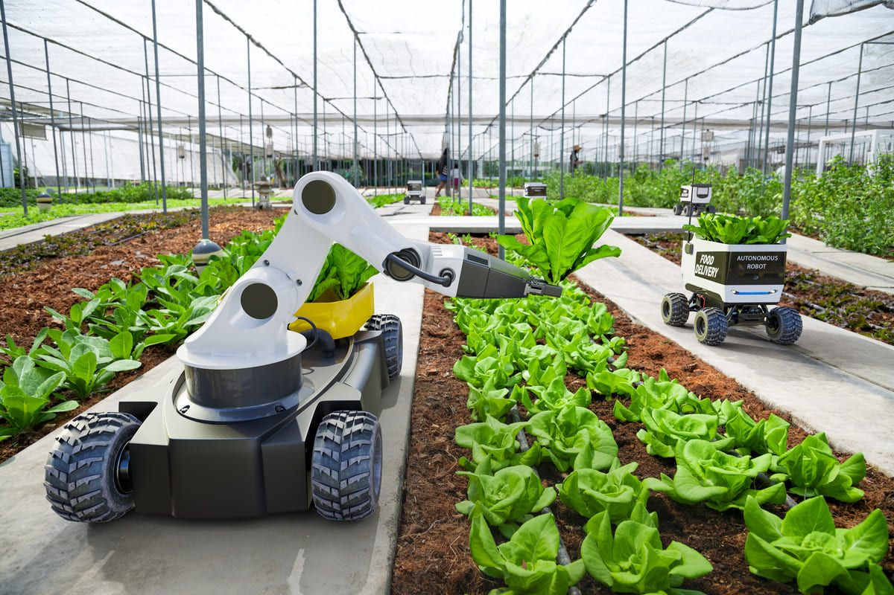

Os fertilizantes desempenham um papel vital na produção de alimentos em todo o mundo. No entanto, seu uso excessivo e inadequado pode ter impactos negativos no meio ambiente, como a contaminação da água e a degradação do solo. É essencial explorar práticas agrícolas sustentáveis que minimizem esses efeitos adversos, garantindo ao mesmo tempo a segurança alimentar global. A tecnologia está revolucionando a maneira como o campo e a cidade interagem. Desde avanços na agricultura de precisão até plataformas de comércio eletrônico para produtos agrícolas, a tecnologia está aproximando esses dois mundos de maneiras inovadoras. Ela oferece soluções para desafios comuns, como o acesso a alimentos frescos e sustentáveis, ao mesmo tempo em que impulsiona a eficiência e a produtividade na produção agrícola.
